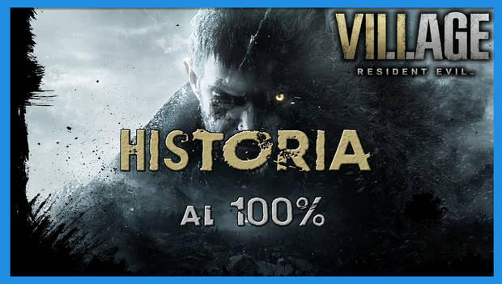
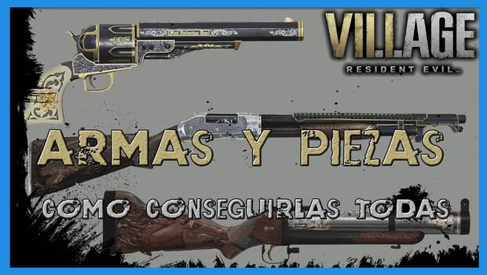
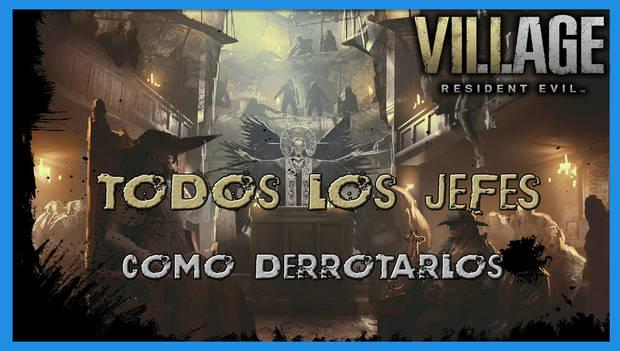

Resident Evil 8 Village: Guía del 100%, trucos, secretos y consejos
INICIO DE LA GUÍA
Bienvenidos a nuestra guía de Resident Evil 8 Village, nueva entraga de la saga de terror y acción de Capcom. En esta ocasión volvemos a afrontar un juego en primera persona, más centrado en la acción que el anterior. A lo largo de esta guía completa en español os mostraremos cómo completar el juego al 100% y sin spoilers, cómo conseguir todas las armas, piezas y coleccionables, cómo conseguir el Rango SS en el modo Mercenarios y mucho más.
Historia

La historia de Resident Evil 8 Village nos presenta a un Ethan Winters buscando venganza por algo que no comprende. A lo largo de esta guía sin spoilers os guiaremos de la mano indicando dónde conseguir cada arma, pieza y coleccionable para optimizar vuestra partida al máximo.
Prólogo: Ethan y Mia tienen una vida de lo más tranquila.
Casco viejo: nos encontramos en un lugar bastante siniestro... y peligroso.
Plaza: ¿queda alguien con vida en este lugar?
Castillo Dimitrescu: sabemos que estás deseando conocer a la giganta.
Retorno a la aldea: volvemos al pueblo, buscando nuevas pistas.
Casa de Beneviento: nuestro siguiente destino es una siniestra casa en la colina.
Presa de Moreu: una aberración nos aguarda al sur de la aldea.
Fuerte de Urias: pocas veces una trampa ha sido tan obvia.
Fábrica de Heisenberf: un último obstáculo en nuestro camino.
Convertirse en héroe: ha llegado la hora de la verdad.Final explicado: ¿te han quedado dudas? Te hablamos del final del juego al detalle.
Armas

En Resident Evil 8 Village hay más de 20 armas distintas, que podremos usar para acabar con las criaturas que nos acosan. En esta sección os mostraremos dónde conseguir cada arma y sus piezas, además del precio y efecto de cada una de sus mejoras.
Munición infinita: te contamos cómo hacerte con munición ilimitada para todas las armas.
Pistola Samurai Edge - AW Model-01: disponible únicamente vía DLC. Una pistola de escasa utilidad, se compra del Duque por 200 lei.
Pistola LEMI: una pistola que se cae a cachos. Mejor que tirar con piedras es, desde luego.
Pistola M1911: una pistola de verdad, de categoría militar.
Escopeta M1897: una escopeta clásica, diseñada para cazar... algo más grande que un conejo.
Escopeta W870 TAC: una potente escopeta de bombeo.
Rifle F2: un rifle de francotirador para acechar a los enemigos.
Lanzagranadas GM 79: un potente cañón que lanza explosivos y granadas cegadoras.
M1851 Wolfsbane: un potente revólver, capaz de parar en seco a casi cualquier enemigo.
Espada láser LZ Answerer: si no puedes usar la Fuerza, al menos usa esta espada láser letal.
Jefes

La historia del juego nos enfrentará a los lideres de la aldea donde hemos terminado por cosas que no vamos a comentar. De nuevo, nos las vemos con un pueblo sometido por unos líderes que parecen controlar, de alguna manera, a los infectados. Aquí os contaremos cómo derortar a todos los jefes finales, así como a los minijefes y jefes opcionales.